The header bar widget can be used to allow the user to navigate around your app and take actions, providing a visual structure to your app. The widget emulates the iOS navigation bar and the Android app bar. If you are working on Mac a header bar widget will be themed like an iOS navigation bar, if you are working on Windows or Linux it will be themed like an Android app bar.
Windows / Linux / Android
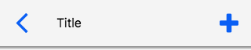
Mac / iOS
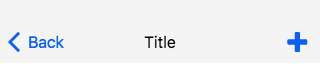
For example in the iOS Clock app the header bar allows the user to choose to edit or add an alarm by navigating to another screen within the Alarm section of the app.
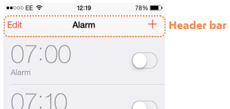
As well as navigating around the app the header bar can also be used to provide access to options such as search, save and delete.
A header bar widget can be created by dragging it out from the Tools Palette, where it appears with the following icon:
Alternatively it can be created in script using:
create widget as "com.livecode.widget.headerbar"
The header bar gets a mouseUp message when it is clicked on, you
handle this message to take the appropriate action for the chosen
action.
The default mouseUp handler of the header bar is
on mouseUp
local tActionName
put the mouseAction of me into tActionName
if tActionName is not empty then
-- Execute script triggered by the given action
end if
end mouseUp
Firstly we get the value of the mouseAction property, which gives us
the name of the header action that was just clicked, allowing us to do
something different depending of what action was clicked. For example
on mouseUp
local tActionName
put the mouseAction of me into tActionName
if tActionName is "back" then
go to card "messageList"
else if tAction is "add" then
go to card "newMessage"
end if
end mouseUp
Note: it is import to remember that the
mouseActionproperty gives you the action name, not the label. Both can be set in the Property Inspector.
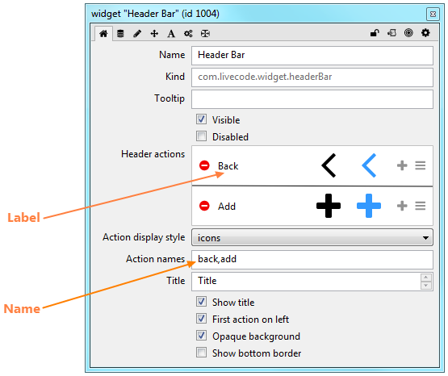
The label is the text that is displayed for an action, when the Action
display style is set to “text”. The name is the name of the action, as
returned by the mouseAction property.
The actions displayed in the header bar, and the appearance of the header bar itself, can be controlled using the Property Inspector.
The header bar can:
The Property Inspector also allows you to set up all the actions that are shown on the header bar, setting the label, icon and highlight icon for each action and allowing you to reorder, add and delete actions.
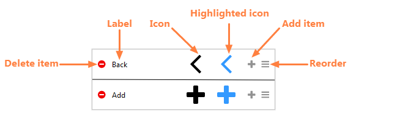
When one of the icons is clicked, a scrollable icon picker is popped up to allow you to choose a new icon. The current selection is highlighted as shown.
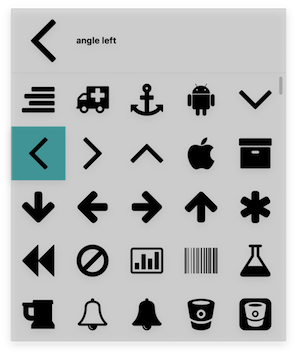
The icon and highlighted icon can be different, to allow further visual feedback about what is currently selected.
The colors of the navigation bar are controlled by the
foregroundColor, backgroundColor, borderColor, and hiliteColor
properties as usual for LiveCode controls. Changing these properties
allows you to customise the header bar to fit in with the design of your
app.
## Examples
Messages Header
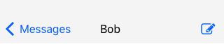
Notes Header
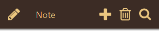 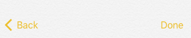
Beyond handling the mouseUp message and using the mouseAction
property to act on the selected action the other thing you might want to
do with your header is to update it depending on the state of the app.
For example if you choose to edit an item in a list the header options
might change to “cancel” and “save”, or similar. You can change the
header actions in script by setting the itemLabels, itemNames,
itemIcons or hilitedItemIcons properties of the header bar widget.
The values of these properties are comma-delimited lists and can be
updated using chunk expressions.
This example shows how to switch a header bar action between “edit” and “done”
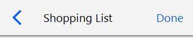 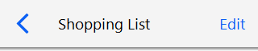
on mouseUp
local tActionName, tActionNames, tActionLabels
put the mouseAction of me into tActionName
put the itemNames of me into tActionNames
put the itemLabels of me into tActionLabels
if tActionName is "edit" then
put "done" into item 2 of tActionNames
put "Done" into item 2 of tActionLabels
set the itemNames of me to tActionNames
set the itemLabels of me to tActionLabels
else if tActionName is "done" then
put "edit" into item 2 of tActionNames
put "Edit" into item 2 of tActionLabels
set the itemNames of me to tActionNames
set the itemLabels of me to tActionLabels
end if
end mouseUp
Setting the theme of the header bar to "Android" or "iOS" will
temporarily display it using the metrics of the chosen platform. This
property is transient - it is not saved with the stack as it uses the
appropriate mobile theme for the platform is is running on.